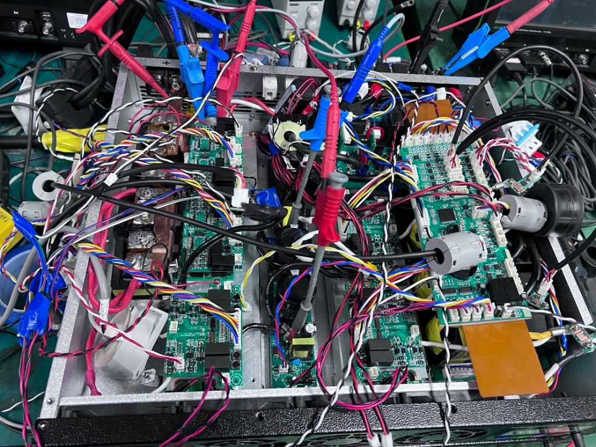
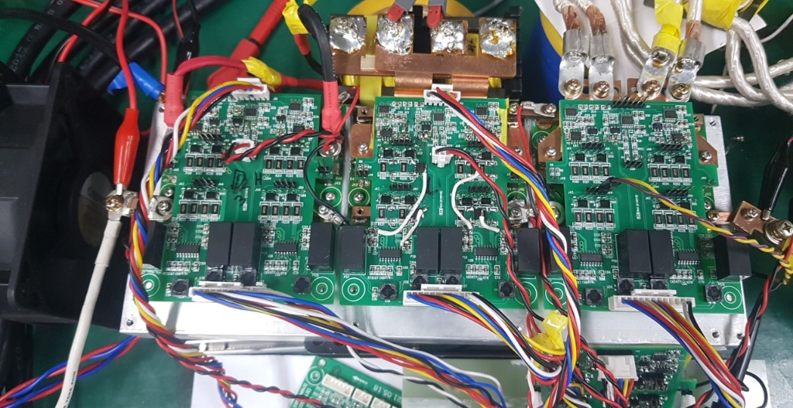
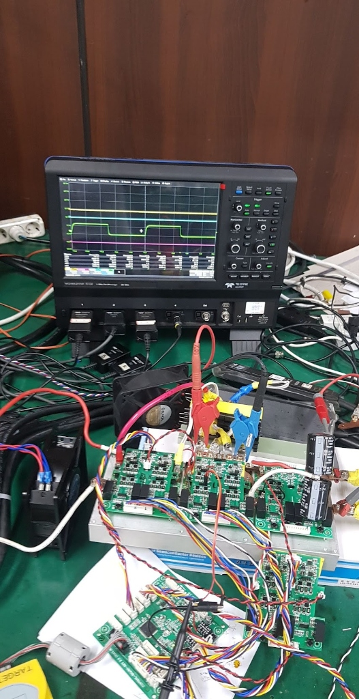
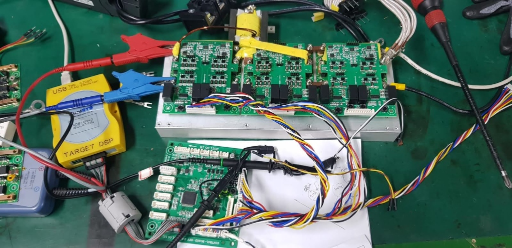
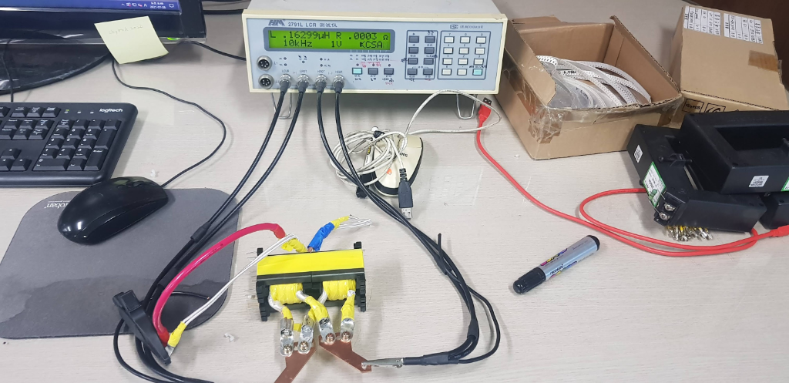
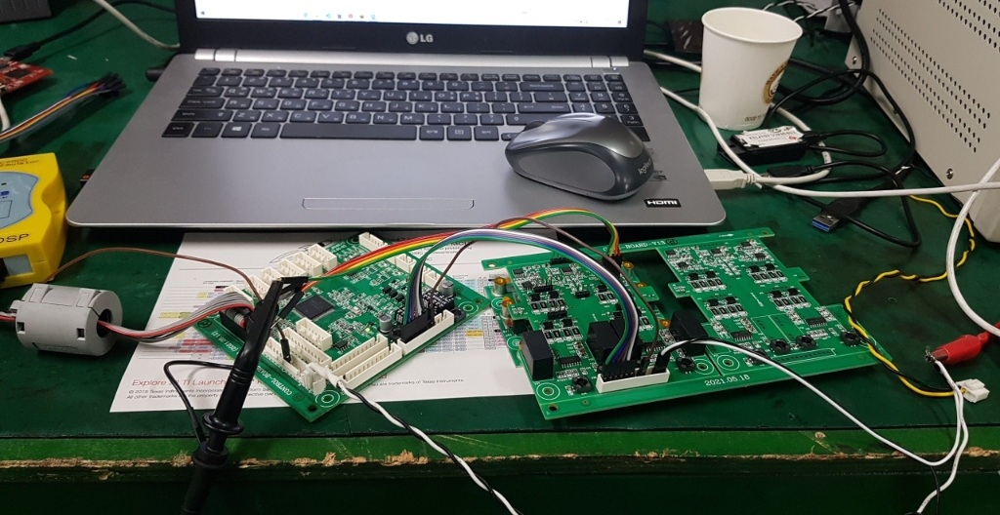
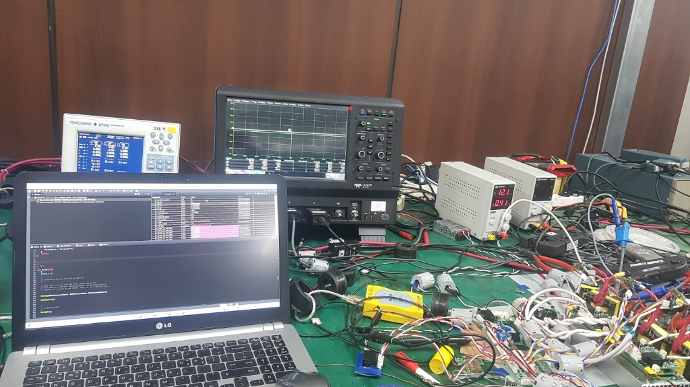
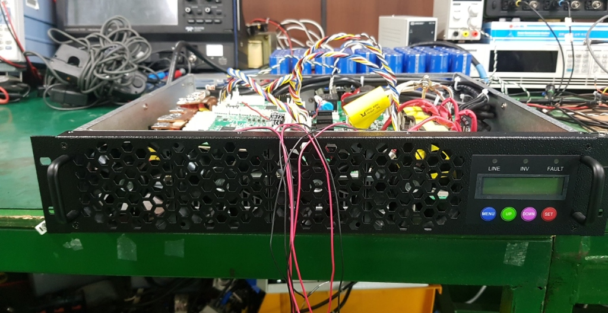
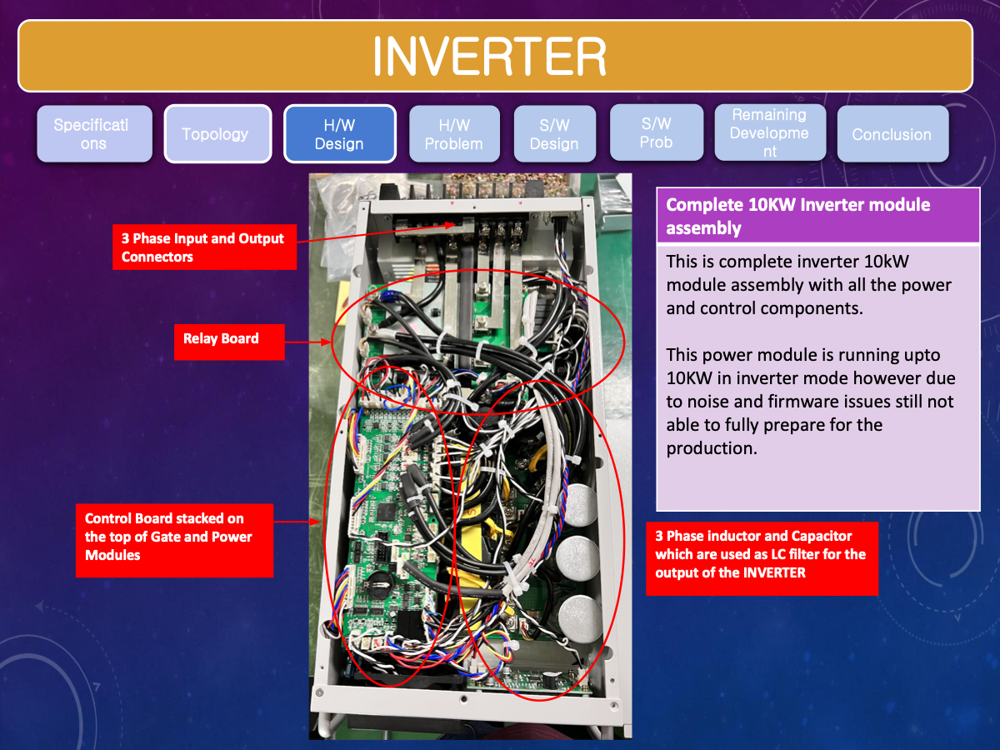
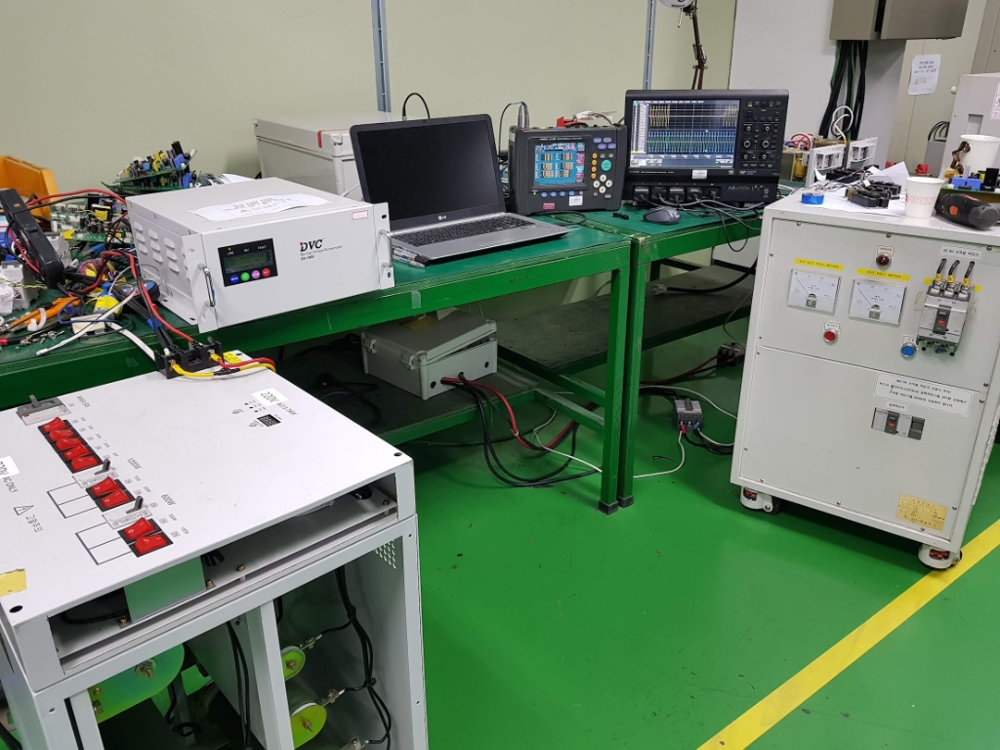

Industrial Experience
Research and hardware development at OKY Ltd.
From 2019 to 2022, I worked at OKY Ltd. in Seoul, South Korea as a Research and Hardware Development Engineer. My role covered the complete design cycle of high-power converter systems, from topology verification and control design to PCB realization, DSP implementation, and experimental testing.

Role summary
OKY Ltd. · Seoul
Research and Hardware Development Engineer leading hardware and controller design
Complete hardware and controller development
At OKY Ltd., I was responsible for converter development at both the power-stage and control levels. My work included topology verification in PSIM, component selection, inductor and transformer design, PCB layout, gate-drive integration, sensing design, digital controller implementation on TI DSP platforms, and closed-loop experimental validation.
This role strengthened my ability to move from analytical design and simulation into robust laboratory realization, especially for systems where fast dynamic response, high current, and reliable switching behavior are critical.
Key Systems
Platforms I developed at OKY Ltd.
The work combined converter hardware, embedded control, and validation under practical operating constraints.
10 kW dual-stage bidirectional converter
Led the complete design and testing of a dual-stage DC-DC-AC converter, including topology verification, magnetic component design, PCB realization, and TI DSP-based control.
My work covered the full path from PSIM verification and component selection to hardware realization, firmware implementation, and bidirectional power-flow validation.
Transformerless dynamic voltage compensator
Developed a three-phase 10 kW DVC platform using a supercapacitor-fed DC-DC stage and inverter section, with fast voltage sag detection and seamless load transfer targets.
I carried out the complete hardware and controller design for this platform, including topology selection, module integration, sensing structure, and control implementation.
D2 Series single-phase DVC firmware modernization
Updated the firmware across a D2 Series single-phase DVC product family, including firmware-version tracking, current-controller tuning by product rating, and overshoot reduction during fast sag-compensation response.
The work supported English LCD display behavior, sag-history storage, supercapacitor energy display, noise-filtered product operation, bypass-related installation behavior, and supercapacitor lifetime indication. I also coordinated with the production team to install the correct firmware on newly shipped products and debugged returned products with reported issues.
Supercapacitor charging and transition control
Designed charging logic and dynamic compensation algorithms to support smooth transition of the load from grid to inverter operation within approximately 2 ms.
This work combined event detection, mode coordination, and practical firmware behavior under tight transient-response requirements.
Engineering Problems
What I solved in industry
My OKY work was hands-on converter engineering under industrial constraints, where performance, manufacturability, and debugging all mattered at the same time.
High-current, high-gain bidirectional conversion
Several of the OKY platforms required difficult voltage conversion ratios together with heavy current stress and reverse power flow. That makes topology choice, magnetic design, switching-device selection, and PCB current-path planning central to the success of the project.
- I verified topologies in PSIM before moving into hardware.
- I designed magnetics, selected power components, and translated the design into buildable hardware.
- I implemented and tested the resulting converter behavior under practical bidirectional operation.
Fast sag response and transition control
Dynamic voltage support products only become useful when the converter can detect disturbances quickly, coordinate its modes safely, and move the load without unstable or visibly poor transitions.
- I developed fast voltage-sag detection and compensation algorithms for inverter-based DVC systems.
- I designed supercapacitor charging logic and transition behavior for grid-to-inverter transfer.
- The implemented control supported smooth transition behavior on the order of a few milliseconds.
Hardware reliability, revision control, and redesign thinking
Industrial hardware development is not only about achieving one successful experiment. It requires managing hardware revisions, firmware revisions, manufacturability concerns, and the feedback loop between prototype issues and the next design iteration.
- I managed firmware and hardware revision histories for commercial single-phase products.
- I worked through sensing, layout, and switching problems that only become visible during laboratory debugging.
- I used those observations to refine the design rather than treating prototype limitations as isolated defects.
Early-stage engineering and proposal support
My role also included front-end technical work before full prototyping began. That meant converting project ideas into technically defensible scopes, ratings, and cost expectations.
- Contributed to proposal writing for new projects and product directions.
- Performed topology analysis, loss estimation, rating calculations, and preliminary cost estimation.
- Helped connect engineering feasibility with business-facing planning.
Hardware Gallery
Converter Development & Testing at OKY
Visual documentation of the 10 kW and 50 kW projects, including custom PCBs, testing benches, and full system assemblies.












What this experience demonstrates
- Ability to take converter systems from concept and simulation to working prototype.
- Strong ownership across hardware design, controller development, and experimental debugging.
- Experience with high-current layouts, sensing noise issues, thermal constraints, and fast transient requirements.
- Practical development mindset shaped by revision control of hardware and firmware for commercial products.
Methods and tools used in industry
- PSIM for topology verification and converter behavior studies.
- TI DSP platforms for embedded digital control implementation.
- PCB and magnetic component design for high-power converter realization.
- Experimental validation for bidirectional power flow, dynamic voltage support, and fast load transfer.